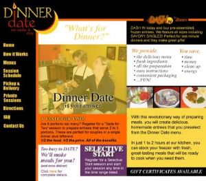

Heather Buller is a mom of 2 from Lincoln, Nebraska. She graduated from Lincoln Southeast High School where she was a part of the winning girls state basketball team in 1990. She attended the University of Lincoln Nebraska where she received her Bachelor of Journalism and Advertising with minors in marketing, economics, and graphic design. She went back to school in 2017 and received her Master of Business Administration with an emphasis in leading teams through change and marketing from Concordia University. She currently works in marketing for the credit card division at First National Bank of Omaha.
In 2002, Heather started her own meal assembly company and received an outstanding achievement young alumni award at the University of Lincoln Nebraska. She also was chosen for an award by the Lincoln Business Journal for their 40 people under 40. Cooking is one of her many hobbies she enjoys in her free time. She also enjoys spending time doing art and projects or reading. Combining the two, she hopes to one day publish a children's book that she has written and illustrated herself.
When she's not working on her next big business venture, she enjoys spending time with her family, friends, and pets. On the weekends she likes to cook or go out to eat and watch some of her current favorite shows and films. She typically does her gardening during this time and enjoys tending to her flowers when it's nice outside. During the colder months and around holidays, she spends a lot of time cooking and baking for friends and family. She enjoys sharing her creations with others and trying new recipes. She is a very sociable person who has high values and a loving personality.